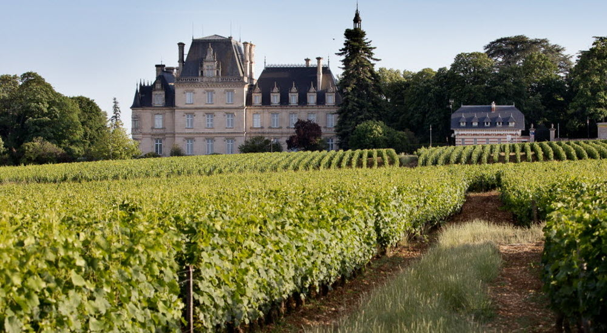

Présentation
Bonjour je m'appelle Mathieu Bianchi, j'ai 17 ans. Je suis en BUT RT (réseaux et télécommunications ) à Colmar en première année. Je viens de Dijon en Côte D'or du lycée Eiffel.Présentation
Bonjour je m'appelle Mathieu Bianchi, j'ai 17 ans. Je suis en BUT RT (réseaux et télécommunications ) à Colmar en première année. Je viens de Dijon en Côte D'or du lycée Eiffel.Parcours
Après avoir fait un BAC STI2D (sciences et technologies de l'industrie et du développement durable) option SIN (Système d'Information et Numérique).Mon Village
Je viens de Côte d'or, J'habite un petit village à côté de Dijon. Pourquoi j'ai choisi le B.U.T Colmar
J'ai chois le B.U.T colmar nia nia nia